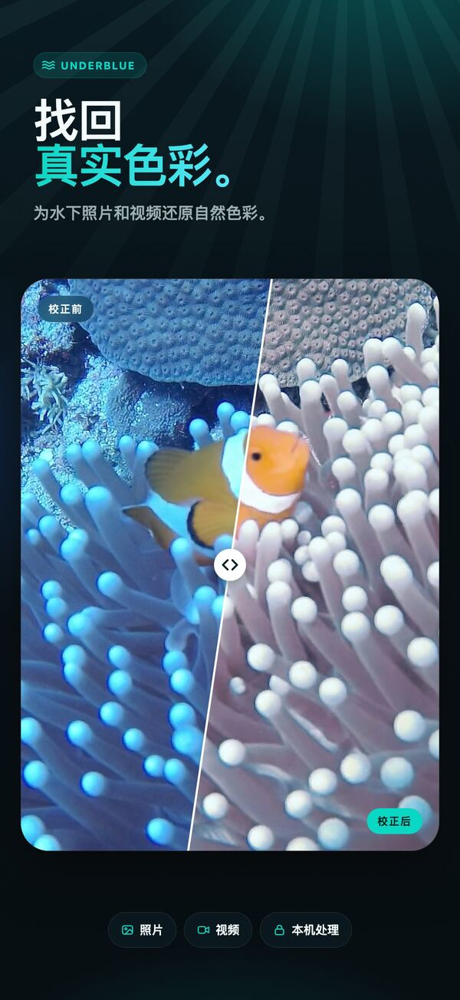
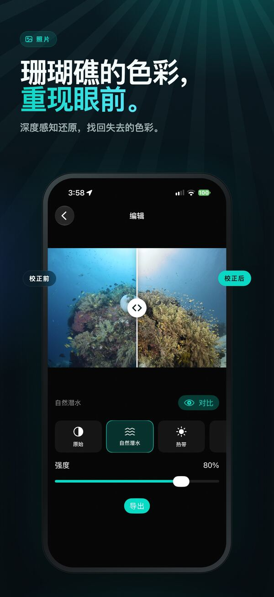
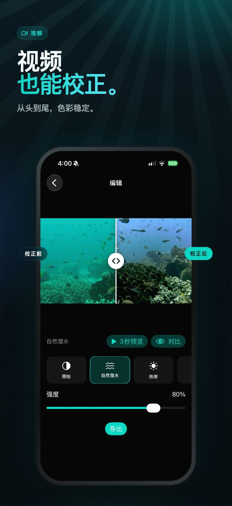
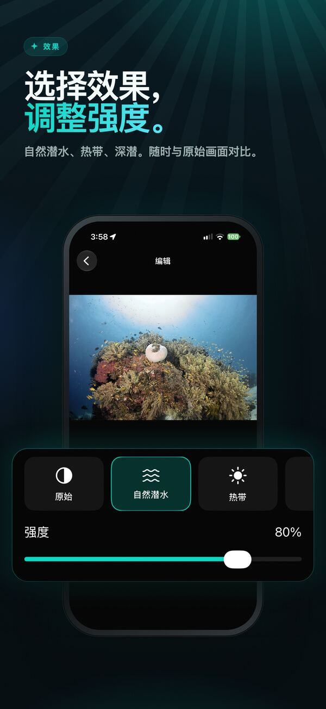
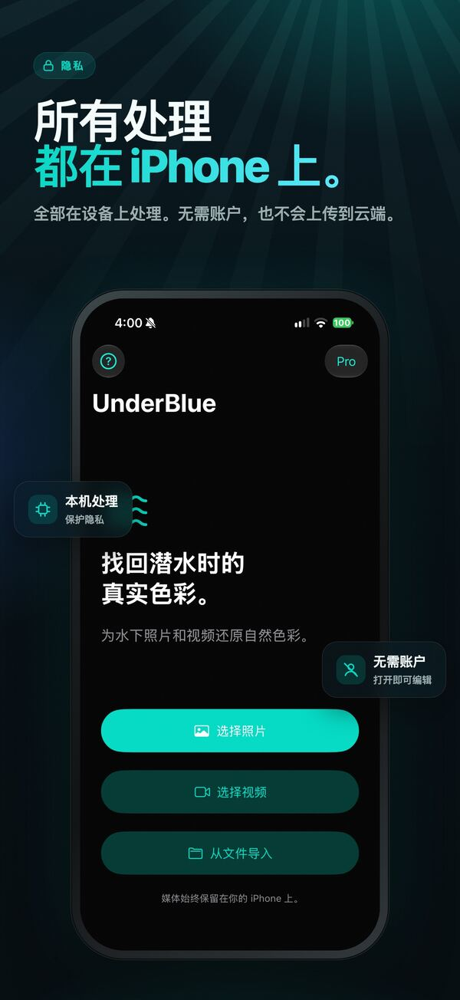

还原水下照片与视频的色彩
在 iPhone 本机完成、保护隐私的深度感知还原，为水下照片和视频找回自然的色彩与清晰度。

UnderBlue 为水下照片和视频还原自然的色彩与清晰度。
导入照片或视频，选择效果，然后与原始画面对比。你可以调整效果的强度，也可以在“自定义”中自行设置亮度、对比度、饱和度、清晰度和色温。UnderBlue 采用深度感知的水下还原技术，减少色彩衰减和悬浮物造成的白色雾感（后向散射），同时保持画面自然，视频色彩也稳定。





主要功能
- 自然潜水、热带、深潜三种效果
- 带有 5 个调节滑块的“自定义”
- 深度感知的照片和视频还原
- 帧与帧之间色彩稳定的视频校正
- 原始分辨率和 4K 视频导出（UnderBlue Pro）
- SDR 及受支持的 HLG/PQ HDR 视频输出
- 带增益图的 HDR 照片导出（UnderBlue Pro）
- 从“照片”App、“文件”App（包括相机 RAW）和共享表单导入
- 保留原始帧率、时序、方向和音频
- 完全在设备上处理，无需账户，也不上传到云端
免费试用
可免费导出 1 张照片，以及 1 个视频的前 10 秒。UnderBlue Pro 为一次性购买。购买后可无限导出照片（每次最多 10 张），并可导出完整视频和 4K 视频，在支持的环境下还可导出 HDR。

UnderBlue 专为记录休闲潜水回忆而设计，不是科学测色工具，也不是专业调色工具。
Mac 版 — 即将推出
在 Mac 上一次批量校正整次潜水的照片和视频。